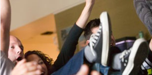

Subway Catering can help you plan for everything from casual get-togethers with just a few friends to gigantic parties with hundreds of guests. But sometimes it is hard to figure out just how much deliciousness to order. Use our handy guide below to ensure you get exactly what you need for your next event.

Sports Gatherings
Whether tailgating or at home, the big game calls for big flavor. So get the gang together and cheer on your team with our piled-high Giant Sub. This tower of taste features an all-star lineup of tender meats, delicious cheeses and crisp veggies to tackle even the biggest hungers.
We mean business. When it comes to flavor, that is. For all of your business and office meetings, look no further than our tasty sandwich platters and refreshing drinks & sides. Or go with our SUBWAY to GO! meals for a quick and convenient catering solution.
If you are planning a birthday party, make sure SUBWAY Catering is on the guest list. Put a piled-high sandwich platter or Giant Sub on the table and fill the room with happy mouths and full stomachs. And don't forget dessert, because no party is complete without our warm and tasty cookies to satisfy your crowd's sweet tooth.
Be the host with the most and make your party a smash hit with something everyone can get down to the delicious flavor of Subway Catering. For a tasty good time try our piled-high sandwich platters and decadent dessert platters for your esteemed guests.
Whether it’s the weekly book club, a picnic in the park or a big block party, Subway® Catering is perfect any time people come together. Cater your next event with a delicious sandwich platter piled high with favorites like the Italian B.M.T®, Ham and more.
Field Trips
We're your go-to for to-go. So before you schedule the next trip to the zoo, museum or wherever you’re headed, order some SUBWAY to GO!™ meals complete with a tasty 6-inch sub, choice of side (chips, yogurt or apple slices) and delicious cookie all packed in a convenient to-go box.
This project is done by Manoj, Tharun, and Shamili